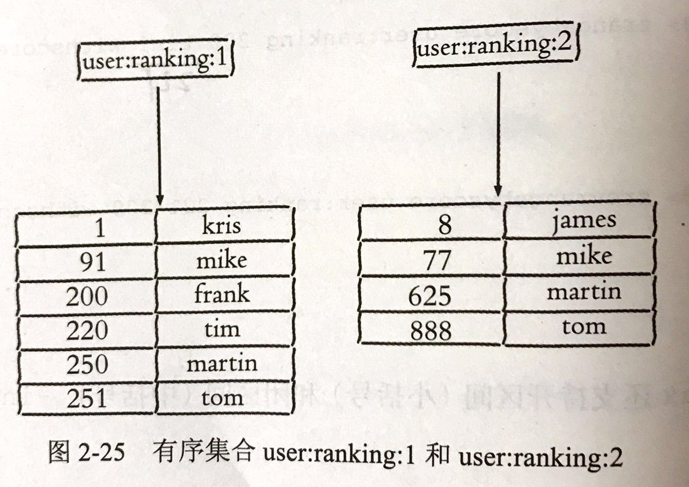

srandmember
通用命令
# Start Redis Service
redis-server redis.conf &
# Login
redis-cli -h -p
# Shutdown (nosave 关闭前是否生成持久化文件)
# 可以使用 kill, 不要使用 kill -9 没有持久化、极端情况 AOF 和复制丢失数据
redis-cli shutdown [nosave]|[save]
# 查看所有键 (慎用 复杂度 O(n))
keys *
# 键总数 (取 redis 内置键总数变量 复杂度 O(1))
dbsize
# 键是否存在 (1 存在 0 不存在)
exists key
# 删除键 (无论什么数据类型,返回成功删除 key 个数,删除不存在的 key 返回 0)
del key [key ...]
# 键过期
expire hello seconds
返回大于 0 的整数:键剩余过期时间
返回 -1:键没有设置过期时间
返回 -2:键不存在
ttl key 可以查看 key 剩余过期时间
# 键的数据类型结构
type key
返回为 key 数据类型 (string 字符串、hash 哈希、list 列表、set 集合、zset 有序集合)
返回 none，key 存在
# 查看 key 内部编码
object encoding key
Key 管理
单个 Key 管理
遍历 Key
数据库管理
字符串命令
# set
set key value [ex seconds] [px milliseconds] [nx|xx]
* ex seconds：为 key 设置秒级过期时间
* px milliseconds：为 key 设置毫秒级过期时间
* nx：key 必须不存在才可以设置成功，用于添加
* xx：与 nx 相反，key 必须存在才可以设置成功，用于更新
setnx setxx 与 ex、xx 选项一样
setnx 可以作为分布式锁的一种实现 [链接](https://redis.io/topics/distlock)
# get (若 key 不存在，返回 nil(空))
get key
# mset
mset key value [key values ...]
# mget
mget key [key ...]
# incr 计数(自增)
incr key
127.0.0.1:6379> set age 10
OK
127.0.0.1:6379> incrby age 10
(integer) 20
* 返回值不是整数，返回错误
* 返回值是整数，返回自增后的结果
* 键不存在，按照值为 0 自增，返回结果为 1
# append
append key value
# strlen
strlen key
# getset (设置并返回原值)
getset key value
# setrange (设置指定位置的字符)
setrange key offset value
# pest -> best
set redis pest
setrange redis 0 b
# getrange (获取部分字符串,start 从 0 开始)
getrant key start end
自增扩展命令
| incr | 自增 |
|---|---|
| decr | 自减 |
| incrby | 自增指定数字 |
| decrby | 自增指定数字 |
| incrbyfloat | 自增浮点数 |
String 命令时间复杂度
| 命令 | 时间复杂度 |
|---|---|
| set key value | O(1) |
| get key | O(1) |
| del key [key ...] | O(k) k 是 key 个数 |
| mset key value [key value ...] | O(k) k 是 key 个数 |
| mget key [key ...] | O(k) k 是 key 个数 |
| incr key | O(1) |
| decr key | O(1) |
| incrby key increment | O(1) |
| decrby key increment | O(1) |
| incrbyfloat key increment | O(1) |
| append key value | O(1) |
| strlen key | O(1) |
| setrange key offset value | O(1) |
| getrange key start end | O(n) n 是字符串长度，由于获取字符串非常快，若不是很长，可以视同 O(1) |
Hash 命令
# hset
hset key field value
成功 返回 1
失败 返回 0
hset user:1 name tom
hsetnx：与 setnx 一样，作用域由 key 变为 field
# hget
hget key field
成功 返回 value
key 不存在返回 nil
# hdel
hdel key field [field ...]
成功 返回删除 field 个数
field 不存在，返回 0
hdel user:1 name
# hlen (计算 field 个数)
hlen key
# hmset hmset 批量设置或获取 field-value
hmget key field [field]
hset key field value [field value ...]
127.0.0.1:6379> hmset user:1 name mike age 12 city tianjin
OK
127.0.0.1:6379> hmget user:1 name age
1) "mike"
2) "12"
# exists (field 是否存在)
hexists key field
存在返回 1
不存在返回 0
127.0.0.1:6379> hexists user:1 name
(integer) 1
# hkeys (获取所有 field)
hkeys key
127.0.0.1:6379> hkeys user:1
1) "name"
2) "age"
3) "city"
# hvals (获取所有 value)
hvals key
127.0.0.1:6379> hvals user:1
1) "mike"
2) "12"
3) "tianjin"
# hgetall (获取所有 field value) [慎用]
hgetall key
127.0.0.1:6379> hgetall user:1
1) "name"
2) "mike"
3) "age"
4) "12"
5) "city"
6) "tianjin"
若 hash 元素较多，会阻塞 redis ，获取部分 field，可使用 hmget，一定获取全部 field，hscan 渐进式遍历 Hash
# hscan
?
# hincrby hincrbyfloat
hincrby key field
hincrbyfloat key field
127.0.0.1:6379> hincrby user:1 age 10
(integer) 22
hincrby、hincrbyfloat 与 incrby、incrbyfloat 一样，但作用域是 field
# hstrlen (计算 value 的字符串长度 Redis 3.2 以上)
hstrlen key field
127.0.0.1:6379> hstrlen user:1 name
(integer) 4
Hash 命令时间复杂度
| command | 时间复杂底 |
|---|---|
| hset key field value | O(1) |
| hget key field | O(1) |
| hdel key field [field ...] | O(k) k 是 field 个数 |
| hlen key | O(1) |
| hgetall key | O(n) n 是 field 总数 |
| hmget key field [field …] | O(k) k 是 field 个数 |
| hmset key field value [field key ...] | O(k) k 是 field 个数 |
| hexists key field | O(1) |
| hkeys key | O(n) n 是 field 总数 |
| hvals key | O(n) n 是 field 总数 |
| hsetnx key field value | O(1) |
| hincrby key field increment | O(1) |
| hincrbyfloat key field increment | O(1) |
| hstrlen key field | O(1) |
List 命令
List 中每个字符串称为元素(element)，最多 232 -1 个元素，可以充当"栈"、"队列"的角色
特点：
- List 中的 element 是有序的，意味可以通过索引下标获取某个元素或某个范围内的元素列表
- List 中的 element 是可以重复的，跟 set、zset 有明显不同
List 的四种操作类型
| 操作类型 | 操作 |
|---|---|
| 添加 | rpush lpush linsert |
| 查 | lrange lindex llen |
| 删除 | lpop rpop lrem ltrim |
| 修改 | lset |
| 阻塞操作 | blpop brpop |
添加操作
# 从左边插入元素
rpush key value [value . ..]
127.0.0.1:6 379> rpush listkey c b a
(integer) 3
lrange 0 -1 从左到右获取列表所有元素
127.0.0.1:6379> lrange listkey 0 -1
1) "c"
2) "b"
3) "a"
# 从左边插入
lpush key value [value ...]
# 向某个元素前或后插入元素
linsert key before|alter pivot value
# 在元素 b 前插入元素 java，返回结果代表当前 list 长度
127.0.0.1:6379> linsert listkey before b java
(integer) 4
127.0.0.1:6379> lrange listkey 0 -1
1) "c"
2) "java"
3) "b"
4) "a"
#
查找
# 获取指定范围内的元素列表
lrange key start end
索引下标特点
* 从左到右，0 -> N-1，从右到左，-1 -> -N
* end 选项包含自身，即 lrange key 1 3 获取下标为 1、2、3 三个元素
*
127.0.0.1:6379> lrange listkey 0 2
1) "c"
2) "java"
3) "b"
# 获取 List 指定索引标下的元素
lindex key index
# 获取 listkey 最后一个元素
127.0.0.1:6379> lindex listkey -1
"a"
# 获取列表长度
llen key
127.0.0.1:6379> llen listkey
(integer) 4
删除
# 从列表左侧弹出元素
lpop key
127.0.0.1:6379> lrange listkey 0 -1
1) "c"
2) "java"
3) "b"
4) "a"
127.0.0.1:6379> lpop listkey
"c"
127.0.0.1:6379> lrange listkey 0 -1
1) "java"
2) "b"
3) "a"：
# 从列表右侧弹出
rpop key
# 删除指定元素
lrem key count value
lrem 从列表找到等于 value 的元素删除，根据 count 不同
* count > 0，从左到右，删除最多 count 个元素
* count < 0，从右到左，删除最多 count 个元素
* count = 0，删除所有
# 从左向右插入 5 个 a，从左边删除 4 个为 a 的元素
127.0.0.1:6379> lpush listkey a
(integer) 4
127.0.0.1:6379> lpush listkey a
(integer) 5
127.0.0.1:6379> lpush listkey a
(integer) 6
127.0.0.1:6379> lpush listkey a
(integer) 7
127.0.0.1:6379> lpush listkey a
(integer) 8
127.0.0.1:6379> lrange listkey 0 -1
1) "a"
2) "a"
3) "a"
4) "a"
5) "a"
6) "java"
7) "b"
8) "a"
127.0.0.1:6379> lrem listkey 4 a
(integer) 4
127.0.0.1:6379> lrange listkey 0 -1
1) "a"
2) "java"
3) "b"
4) "a"
# 按索引范围修改剪列表
ltrim key start end
# 保留列表下标为 1-3的元素，即第 2 个到第 4 个
127.0.0.1:6379> lrange listkey 0 -1
1) "a"
2) "java"
3) "b"
4) "a"
127.0.0.1:6379> ltrim listkey 1 3
OK
127.0.0.1:6379> lrange listkey 0 -1
1) "java"
2) "b"
3) "a"
修改
# 修改指定下标的元素
lset key index newvalue
127.0.0.1:6379> lrange listkey 0 -1
1) "java"
2) "b"
3) "a"
127.0.0.1:6379> lset listkey 2 python
OK
127.0.0.1:6379> lrange listkey 0 -1
1) "java"
2) "b"
3) "python"
阻塞操作
# key 多个列表的 key，timeout 为阻塞时间(单位为秒 s)
blpop key [key ...] timeout
brpop key [key ...] timeout
blopo、brpop 是 lpop、rpop 阻塞版本
列表为空
timeout=3，客户端要等 3 秒返回，timeout=0，客户端一直阻塞下去
127.0.0.1:6379> brpop list:test 3
(nil)
(3.05s)
127.0.0.1:6379> brpop list:test 0
... 阻塞 ...
# 在此期间另一个 session 加元素 element1，则 brpop 客户端立即返回
127.0.0.1:6379> lpush list:test element1
(integer) 1
127.0.0.1:6379> brpop list:test 0
1) "list:test"
2) "element1"
(304.53s)
- 列表不为空，客户端立即返回
brpop 注意事项
如果多个 key，brpop 会从左到右遍历 key，一旦有一个 key 能弹出元素客户端立即返回
127.0.0.1:6379> brpop list:1 list:2 list:3 0 ... 阻塞 ... # 另一客户端分别向 list:2、list:3 插入元素 127.0.0.1:6379> lpush list:2 element2 (integer) 1 127.0.0.1:6379> lpush list:3 element3 (integer) 1 # 客户端会立即返回 list:2 中的 element2，因为 list:2 最先有可以弹出的元素 127.0.0.1:6379> brpop list:1 list:2 list:3 0 1) "list:2" 2) "element2" (43.29s)多个客户端对同一个 key 执行 brpop，最先执行的 brpop 的客户端获致弹出的值，其他客户端阻塞等待
List 命令时间复杂度
| 操作类型 | 命令 | 时间复杂度 |
|---|---|---|
| 添加 | rpush key value [value ...] | O(k) k是元素个数 |
| lpush key value [value ...] | O(k) k是元素个数 | |
| linsert key before | after pivot value | |
| 查找 | lrange key start end | O(s+n) s 是 start 偏移量，n 是 start 到 end 的范围 |
| lindex key index | O(n) n是索引偏移量 | |
| llen key | O(1) | |
| 删除 | lpop key | O(1) |
| rpop key | O(1) | |
| lrem count value | O(n) | |
| ltrim key start end | O(n) n 是要裁剪的元素总数 | |
| 修改 | lset key index value | O(n) n 是索引的偏移量 |
| 阻塞操作 | blpop brpop | O(1) |
集合 SET
元素不重复，不能通过索引下标获取元素，一个集合最多可以存储 232-1 个元素
集合内操作
添加元素
sadd key element [element ...]
返回为添加成功的元素个数
127.0.0.1:6379> exists myset
(integer) 0
127.0.0.1:6379> sadd myset a b c
(integer) 3
127.0.0.1:6379> sadd myset a b
(integer) 0
127.0.0.1:6379>
删除元素
srem key element [element ...]
返回为成功删除元素的个数
127.0.0.1:6379> srem myset a b
(integer) 2
127.0.0.1:6379> srem myset hello
(integer) 0
计算元素个数
scard key
scard 的时间复杂度为 O(1),并不会遍历集合所有元素，直接用 Redis 内部变量
127.0.0.1:6379> scard myset
(integer) 1
判断元素是否在集合中
sismember key element
在集合内返回 1，反之返回 0
127.0.0.1:6379> sismember myset a
(integer) 0
127.0.0.1:6379> sismember myset c
(integer) 1
随机从集合返回指定个数元素
srandmember key [count]
[count] 可选，若不写，默认为 1.
127.0.0.1:6379> srandmember myset 2
1) "c"
2) "a"
127.0.0.1:6379> srandmember myset
"b"
从集合随机弹出元素
spop key [count]
Redis 3.2 以后才支持 [count]，与 srandmember 区别是，spop 是随机选中元素并删除，srandmember 并不会删除元素。
127.0.0.1:6379> smembers myset
1) "b"
2) "a"
3) "c"
127.0.0.1:6379> spop myset
"a"
127.0.0.1:6379> smembers myset
1) "b"
2) "c"
127.0.0.1:6379> spop myset 2
1) "b"
2) "c"
127.0.0.1:6379> smembers myset
(empty list or set)
获取所有元素
smembers key
semebers、lrange、hgetall 都属于比较重的命令，如果元素过多存在阻塞 Redis 的可能性，可以使用 sscan 来完成。
127.0.0.1:6379> smembers myset
1) "b"
2) "a"
3) "c"
集合间操作
现在有 2 个集合：
127.0.0.1:6379> sadd user:1:follow it music his sports
(integer) 4
127.0.0.1:6379> sadd user:2:follow it news ent sports
(integer) 4

交集
sinter key [key ...]
127.0.0.1:6379> sinter user:1:follow user:2:follow
1) "sports"
2) "it"
并集
sunion key [key ...]
127.0.0.1:6379> sunion sinter user:1:follow user:2:follow
1) "sports"
2) "ent"
3) "music"
4) "news"
5) "his"
6) "it"
差集
sdiff key [key ...]
127.0.0.1:6379> sdiff user:1:follow user:2:follow
1) "music"
2) "his"
将交集、并集、差集结果保存
sinterstore destination key [key ...]
sunionstore destination key [key ...]
sdiffstore destination key [key ...]
集合间操作在元素较多时比较耗时
127.0.0.1:6379> sinterstore user:1_2:inter user:1:follow user:2:follow
(integer) 2
127.0.0.1:6379> type user:1_2:inter
set
127.0.0.1:6379> smembers user:1_2:inter
1) "sports"
2) "it"
SET 命令时间复杂度
| 命令 | 时间复杂度 |
|---|---|
| sadd key element [element ...] | O(k) k 是元素个数 |
| srem key element [elemetn ...] | O(k) k 是元素个数 |
| scard key | O(1) |
| sismember key element | O(1) |
| srandmember key [count] | O(count) |
| spop key [count] | O(count) |
| smembers key | O(n) n 是元素总数 |
| sinter key [key …] or sinterstore | O(m*k) k 是多个集合中元素最少的个数，m 是 key 个数 |
| sunion key [key …] or sunionstore | O(k) k 是多个集合元素个数和 |
| sdiff key [key …] or sdiffstore | O(k) k 是多个集合元素个数和 |
有序集合
成员不能重复，可以排序，与 List 索引下标作为排序依据不同，每个元素有一个 分数(score) 作为排序依据
有序集合元素不能重启，但 score 可以重复，相当一个班级学号不能重复，但分数可以相同
列表 List、集合 Set、有序集合 Zset 异同
| 数据结构 | 是否允许重复元素 | 是否有序 | 有序实现方式 | 应用场景 |
|---|---|---|---|---|
| 列表 List | 是 | 是 | 索引下标 | 时间轴、消息队列 |
| 集合 Set | 否 | 否 | 无 | 标签、社交 |
| 有序集合 Zset | 否 | 是 | Score | 排行榜、社交 |
集合内操作
添加成员
zadd key score member [score member ...]
结果返回成功添加成员个数
127.0.0.1:6379> zadd user:ranking 251 tom
(integer) 1
注意
- Redis 3.2 为 zadd 命令添加 nx、xx、ch、incr 四个选项
- nx: member 必须不存在，才可以设置成功，用于添加。
- xx: member 必须存在，才可以设置成功，用于更新。
- ch: 返回此次操作后，有序集合元素和分数发生变化的个数。
- incr: 对 score 做增加，相当于后面介绍的 zincrby。
- 有序集合 zset 相比集合提供了排序字段，产生了代价，zadd 时间复杂度为 O(log(n)),sadd 的时间复杂度为 O(1)。
计算成员个数
zcard key
和集合 set 类似命令 scard 一样，时间复杂度为 O(1)
127.0.0.1:6379> zcard user:ranking
(integer) 1
计算某个成员分数
zscore key member
tom 分数为 251，若成员不存在则返回 nil
127.0.0.1:6379> zscore user:ranking tom
"251"
127.0.0.1:6379> zscore user:ranking test
(nil)
计算成员排名
zrank key member
zrevrank key member
zrank 从分数从低到高返回排名，zrevrank 反之。
zrank user:ranking tom
zrevrank user:ranking tom
删除成员
zrem key member [member]
返回结果为成功删除的个数。
127.0.0.1:6379> zrem user:ranking tom
(integer) 1
增加成员的分数
zincrby key increment member
如果 member 存在，返回增加后的分值，如果 member则添加 member 并给分值
127.0.0.1:6379> zincrby user:ranking 9 tom
"260"
127.0.0.1:6379> zincrby user:ranking 9 test
"9"
返回指定排名范围的成员
zrange key start end [withscores]
zrevrange key start end [withscores]
有序集合按分值排序，zrange 是从低到高返回，zrevrange 反之，加上 withscores 返回成员的分数。
返回所有成员和分数
zrange user:ranking:1 0 -1 withscores
127.0.0.1:6379> zrange user:ranking 0 2 withscores
1) "test"
2) "9"
3) "saup"
4) "200"
5) "tom"
6) "260"
返回指定分数范围的成员
zrangebyscore key min max [withscores] [limit offset count]
zrevrangebyscore key min max [withscores] [limit offset count]
zrangebyscore 按分数从低到高返回，zrevrangebyscore 反之。加上 withscores 返回成员分数，limit offset count 选项可以限制输出成员起始位置和个数
min、max 支持区间(小括号)和闭区间(中括号)，-inf、+inf 代表无限小和无限朋
127.0.0.1:6379> zrangebyscore user:ranking 200 221 withscores
1) "frank"
2) "200"
3) "saup"
4) "200"
5) "tim"
6) "220"
127.0.0.1:6379>
127.0.0.1:6379> zrevrangebyscore user:ranking 221 200 withscores
1) "tim"
2) "220"
3) "saup"
4) "200"
5) "frank"
6) "200"
127.0.0.1:6379> zrangebyscore user:ranking (200 +inf withscores
1) "tim"
2) "220"
3) "tom"
4) "260"
返回指定分数范围成员个数
zcount key min max
返回 200 - 210 的成员
127.0.0.1:6379> zcount user:ranking 200 221
(integer) 3
删除指定排名内的升序元素
zremrangebyrank key star end
删除第 start 到 end 的成员
127.0.0.1:6379> zremrangebyrank user:ranking 0 2
(integer) 3
删除指定分数范围的成员
zremrangebyscore key min max
将 250 分以上的成员全部删除，返回为成员删除的个数
127.0.0.1:6379> zremrangebyscore user:ranking (250 +inf
(integer) 1
集合间操作
俩个有序集合

127.0.0.1:6379> zadd user:ranking:1 1 kris 91 mike 200 frank 220 tim 250 martin 251 tom
(integer) 6
127.0.0.1:6379> zadd user:ranking:2 8 james 77 mike 625 martin 888 tom
(integer) 4
交集
zinterstore destination numkeys key [key ...] [weights weight [weight ...]] [aggregate sum|min|max]
* destination: 交集计算结果保存到这个 Key
* numkeys: 需要做交集计算 Key 的个数
* key [key ...]: 需要做交集的 Key
* weights weight [weight ...]: 每个 Key 权重，在做交集计算时，每个 Key 的每个 member 会将自己分数乘以这个权重，每个 Key 权重默认为 1
* aggregate sum|min|max: 计算成员交集后，分值可以按照 sum、min、max 做汇总，默认是 sum
对 user:ranking:1、user:ranking:2 交集，weights、aggregate 默认值，目标 Key 对分值做了 sum
127.0.0.1:6379> zinterstore user:ranking:1_inter_2 2 user:ranking:1 user:ranking:2
(integer) 3
127.0.0.1:6379> zrange user:ranking:1_inter_2 0 -1 withscores
1) "mike"
2) "168"
3) "martin"
4) "875"
5) "tom"
6) "1139"
127.0.0.1:6379>
让 user:ranking:2 权重变为 0.5，并且聚合 max
127.0.0.1:6379> zinterstore user:ranking:1_inter_2 2 user:ranking:1 user:ranking:2 weights 1 0.5 aggregate max
(integer) 3
127.0.0.1:6379> zrange user:ranking:1_inter_2 0 -1 withscores
1) "mike"
2) "91"
3) "martin"
4) "312.5"
5) "tom"
6) "444"
并集
zunionstore destination numkeys key [key ...] [weights weight [weight...]] [aggregate sum|min|max]
127.0.0.1:6379> zunionstore user:ranking:1_union_2 2 user:ranking:1 user:ranking:2
(integer) 7
127.0.0.1:6379> zrange user:ranking:1_union_2 0 -1 withscores
1) "kris"
2) "1"
3) "james"
4) "8"
5) "mike"
6) "168"
7) "frank"
8) "200"
9) "tim"
10) "220"
11) "martin"
12) "875"
13) "tom"
14) "1139"
有序集合 ZSET 命令时间复杂度
| 命令 | 时间复杂度 |
|---|---|
| zadd key score member [score member ...] | O(k*log(n)) k 是添加成员个数 n 是当前有序集合成员个数 |
| zcard key | O(1) |
| zscore key member | O(1) |
| zrank key member zrevrank key member | O(log(n)) n 是当前有序集合成员个数 |
| zrem key member [member ...] | O(k*log(n)) k 是删除成员个数，n 是当前有序集合成员个数 |
| zincrby key increment member | O(log(n)) n 是当前有序集合成员的个数 |
| zrange key start end [withscores] zrevrange key start end [withscores] | O(log(n)+k) k 是获取成员的个数，n 是当前有序集合成员个数 |
| zrangebyscore key min max [withscores] zrevrnagebyscore key max min [withscores] | O(log(n)+k) k 是获取成员的个数，n 是当前有序集合成员个数 |
| zount | O(log(n)) n 是当前有序集合成员的个数 |
| zremrangebyrank key start end | O(log(n)+k) k 是要删除的成员个数，n 是当前有序集合成员个数 |
| zremrangebyscore key min max | O(log(n)+k) k 是要删除的成员个数，n 是当前有序集合成员个数 |
| zinterstore destination numkeys key [key ...] | O(nk) + O(mlog(m)) n 是成员数最小的有序集合，k 是有序集合的个数，m 是结果集中成员的个数 |
| zunionstore destination numkeys key [kye...] | O(n) + O(m*log(m)) n 是所有有序集合成员个数和，m 是结果集中成员个数 |